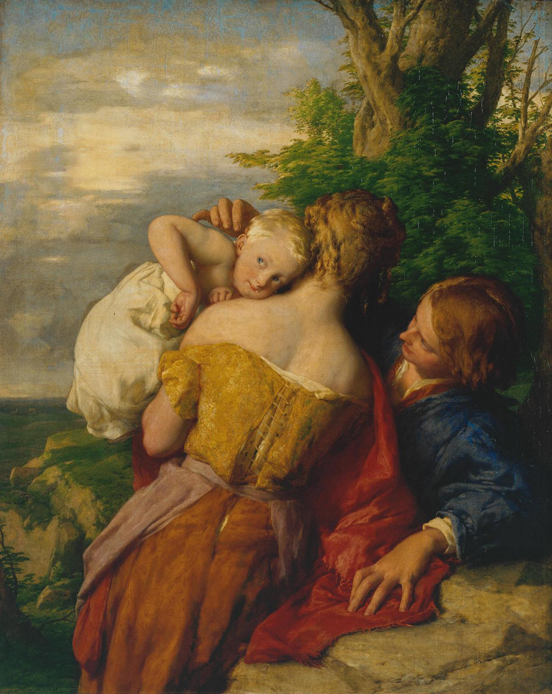
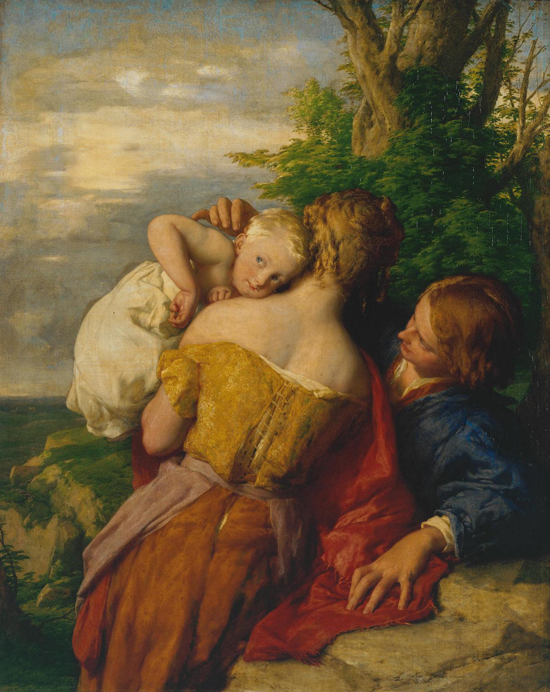
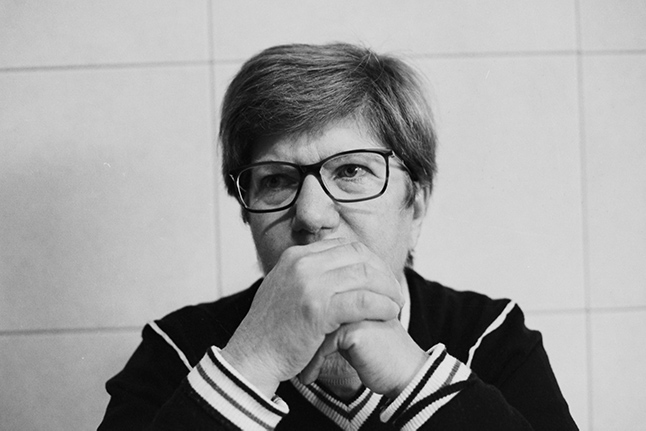
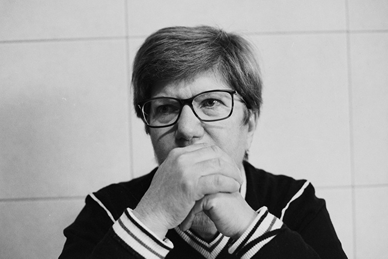
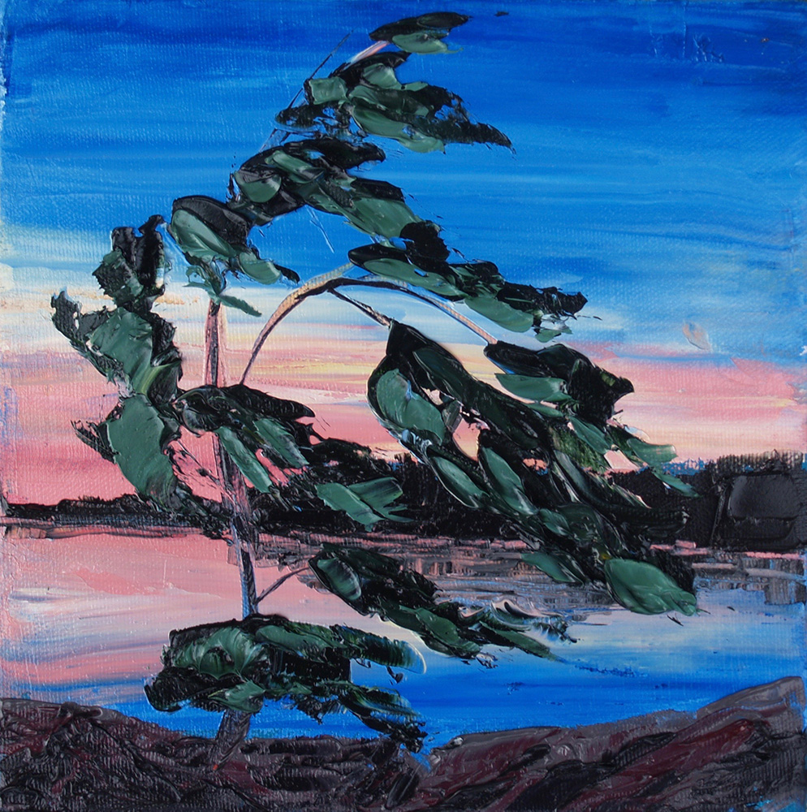
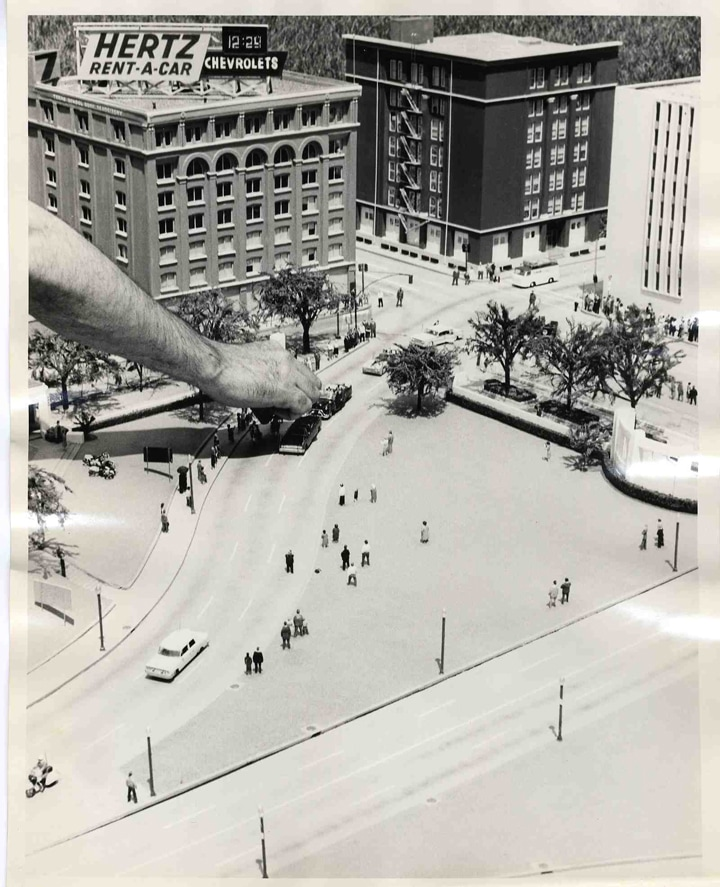
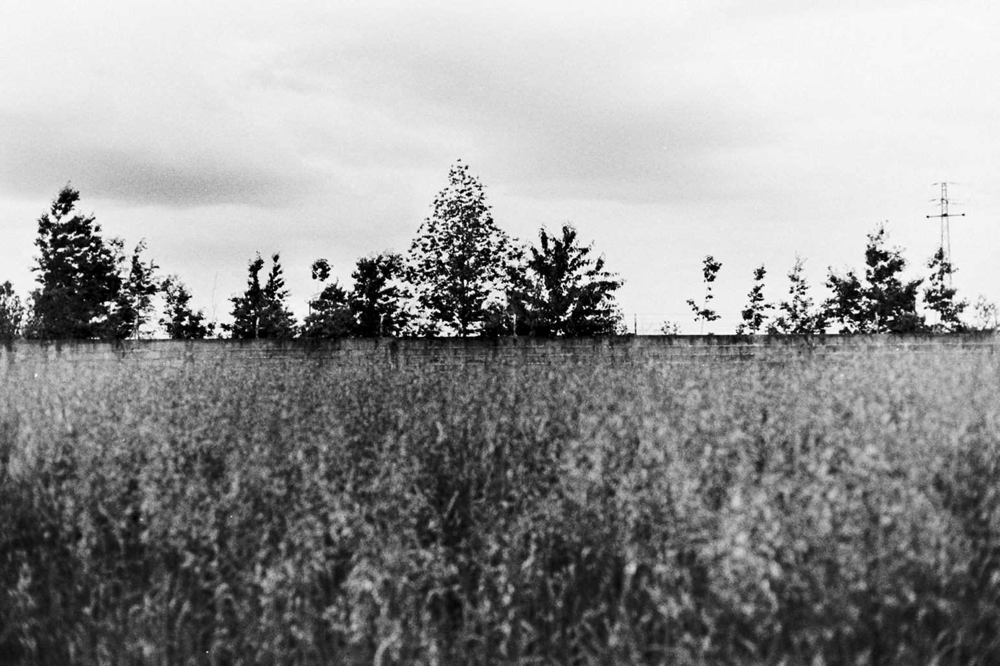
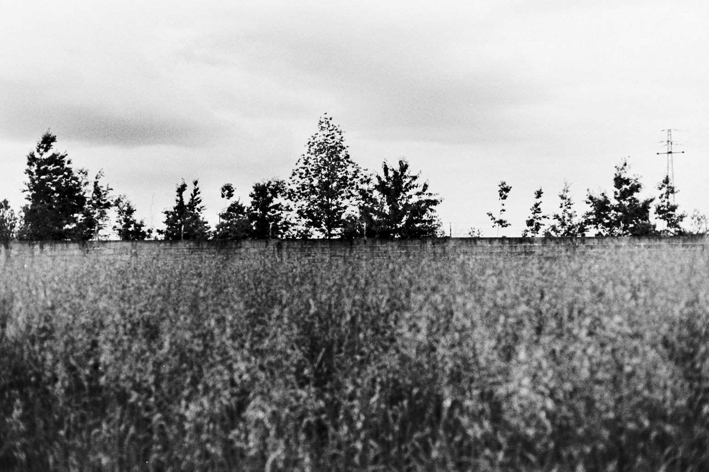
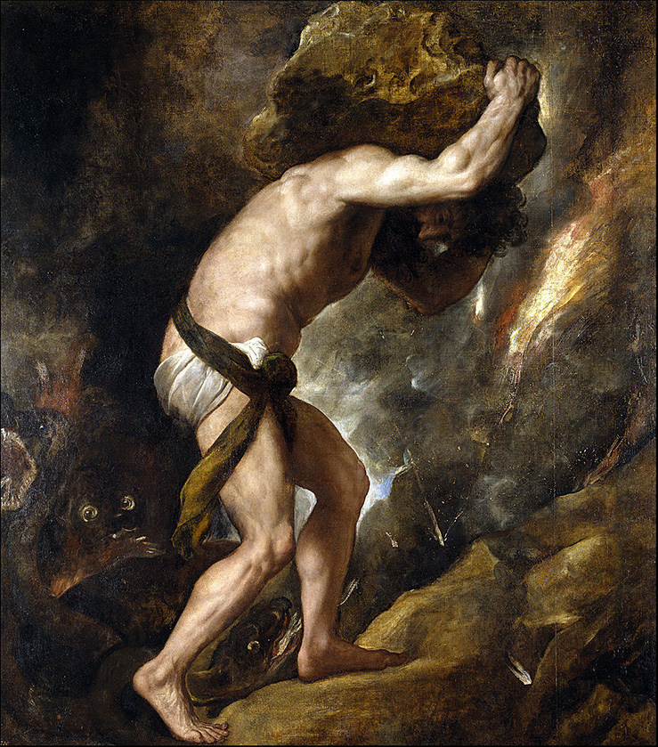
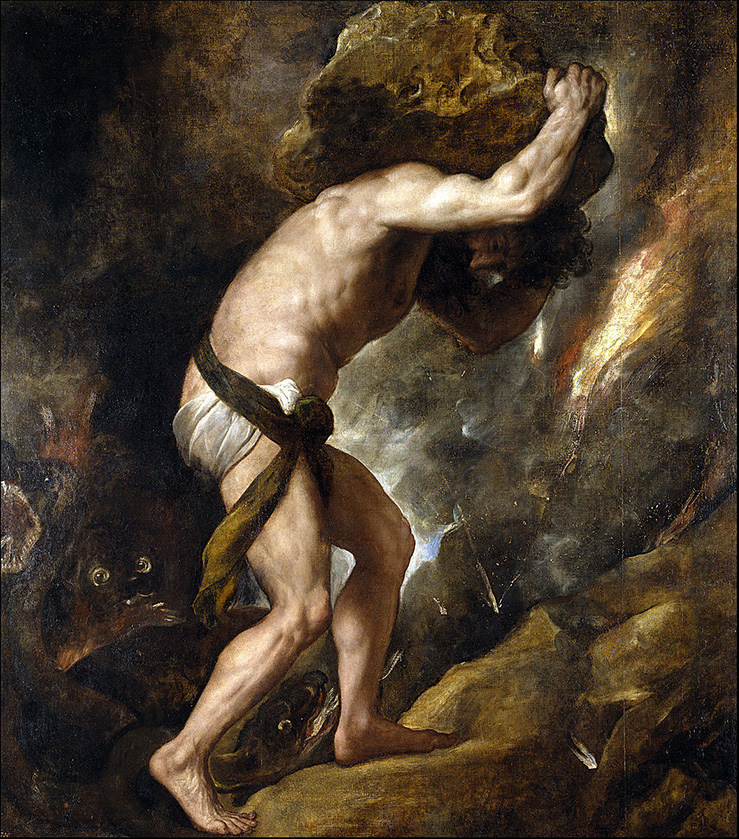

Retrato de dois irmãos, em que uma mente é incapaz de ser ferida por viver na inocência, e outra completa-a por meio de um amor sincero, em que o único significado de ambas as vidas é viver.
Procura-se uma representação fatalista de uma vida e de um amor onde não se espera nada de diferente do que é, nem no futuro, nem no passado. Mostrando os seus hábitos, as tradições, os animais, a terra, os gestos e os seus rostos.


 

 


Invoca-se aqui a ideia de Nietzsche de um eterno retorno do universo: "Quem quer que tu sejas, amado estranho, a quem eu encontro aqui pela primeira vez, aproveita esta hora feliz e a quietude que nos rodeia e acima de nós, e deixa-me dizer-te algo do pensamento que subitamente surgiu diante de mim como uma estrela que fracamente lançaria raios sobre ti e sobre cada um, como convém à natureza da luz. – Companheiro! Toda a tua vida, como uma ampulheta, sempre será revertida e se esgotará novamente - um longo minuto transcorrerá até que todas as condições das quais tu evoluíste retornem na roda do processo cósmico. E então tu encontrarás toda a dor e todo o prazer, todo o amigo e todo o inimigo, toda a esperança e todo o erro, toda a folha de relva e todo o raio de sol, mais uma vez, e todo o tecido das coisas que compõem a tua vida. Esse anel, em que tu és apenas um grão, brilhará novamente para sempre. E em todos esses ciclos da vida humana, haverá uma hora em que, pela primeira vez, um homem, e então muitos, perceberão o poderoso pensamento da eterna recorrência de todas as coisas: – e para a humanidade, essa é sempre a hora do Meio-dia".




“O que é necessário, em vez de escapar, controlar ou suprimir ou qualquer outra resistência, é entender o medo; isso significa olhar para ele, aprender sobre ele, entrar em contato com ele. Temos que aprender sobre o medo, não como escapar dele.”
 

 
